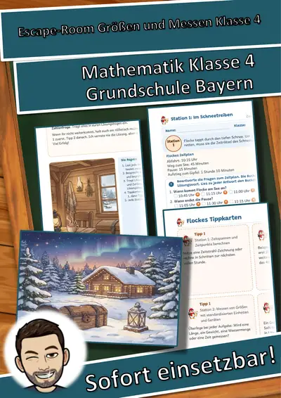
Escape-Room Größen und Messen Klasse 4 – Mathematik Klasse 4 Grundschule: 6 Stationen, 2 Schlösser

Winter Logic Puzzles: 6 Snowy Brain Teasers in 3 Levels (Grades 3-4)
Escape-Room Raum und Form Klasse 4 – Mathematik Klasse 4 Grundschule: 6 Stationen, 2 Schlösser

Escape-Room Zahlen bis zur Million – Mathematik Klasse 4 Grundschule: 6 Stationen, 2 Schlösser

Escape-Room Daten und Zufall – Mathematik Klasse 3 Grundschule: 6 Stationen, 2 Schlösser

Escape-Room Größen und Messen – Mathematik Klasse 3 Grundschule: 6 Stationen, 2 Schlösser

Escape-Room Raum und Form Klasse 3 – Mathematik Klasse 3 Grundschule: 6 Stationen, 2 Schlösser

Escape-Room Zahlenraum bis 1000 – Mathematik Klasse 3 Grundschule: 6 Stationen, 2 Schlösser
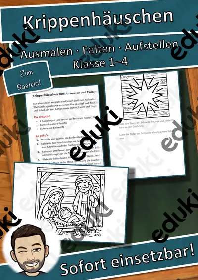
Krippenhäuschen basteln: Stall zum Ausmalen und Falten mit Weihnachtsgeschichte (Klasse 1–4)

Geschenkkarten und Anhänger Weihnachten: 4 Klappkarten, 8 Anhänger und Aufkleb-Figuren (Klasse 1–4)
Escape-Room Daten und Zufall Klasse 2 – Mathematik Klasse 2 Grundschule: 6 Stationen, 2 Schlösser
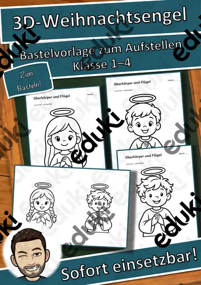
3D-Weihnachtsengel basteln: Bastelvorlage zum Aufstellen mit 8 Engeln und 5 Kleidern (Klasse 1–4)

Weihnachtsengel 3D Bastelvorlage

Escape-Room Größen und Messen – Mathematik Klasse 2 Grundschule: 6 Stationen, 2 Schlösser
Escape-Room_Daten_und_Zufall_mathem_GS1

Escape-Room Daten und Zufall – Mathematik Klasse 1 Grundschule: 6 Stationen, 2 Schlösser

Escape-Room Raum und Form Klasse 2 – Mathematik Klasse 2 Grundschule: 6 Stationen, 2 Schlösser

Escape-Room Zahlen und Operationen – Mathematik Klasse 2 Grundschule: 6 Stationen, 2 Schlösser
Escape-Room_Groessen_und_Messen_mathem_GS2
Escape-Room_Raum_und_Form_Klasse_2_mathem_GS2
Escape-Room_Zahlen_und_Operationen_mathem_GS2
Escape-Room Größen und Messen Klasse 1 – Mathematik Klasse 1 Grundschule: 6 Stationen, 2 Schlösser
Escape-Room Zahlen und Operationen 1 – Mathematik Klasse 1 Grundschule: 6 Stationen, 2 Schlösser
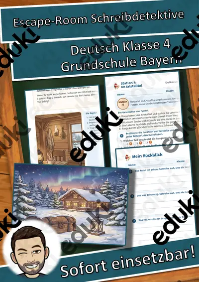
Escape-Room Schreibdetektive – Deutsch Klasse 4 Grundschule: 6 Stationen, 2 Schlösser
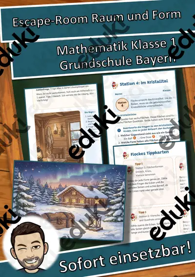
Escape-Room Raum und Form – Mathematik Klasse 1 Grundschule: 6 Stationen, 2 Schlösser
Escape-Room Sprechen und Zuhören 4 – Deutsch Klasse 4 Grundschule: 6 Stationen, 2 Schlösser
Escape-Room Sprachschatz-Detektive – Deutsch Klasse 3 Grundschule: 6 Stationen, 2 Schlösser
Escape-Room Lesen & Texte erschließen – Deutsch Klasse 2 Grundschule: 6 Stationen, 2 Schlösser
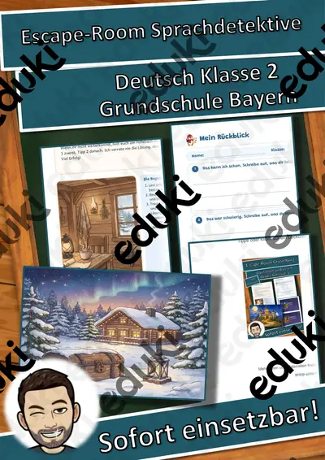
Escape-Room Sprachdetektive – Deutsch Klasse 2 Grundschule: 6 Stationen, 2 Schlösser
Escape-Room Sprachdetektive – Deutsch Klasse 4 Grundschule: 6 Stationen, 2 Schlösser

Escape-Room Medien-Detektive – Deutsch Klasse 4 Grundschule: 6 Stationen, 2 Schlösser

Escape-Room Schreiben – Deutsch Klasse 2 Grundschule: 6 Stationen, 2 Schlösser

Escape-Room Sprechen und Zuhören – Deutsch Klasse 2 Grundschule: 6 Stationen, 2 Schlösser

Escape-Room Schreibwerkstatt – Deutsch Klasse 3 Grundschule: 6 Stationen, 2 Schlösser

Escape-Room Sprachdetektive – Deutsch Klasse 1 Grundschule: 6 Stationen, 2 Schlösser

Escape-Room Lesen und Medien – Deutsch Klasse 3 Grundschule: 6 Stationen, 2 Schlösser
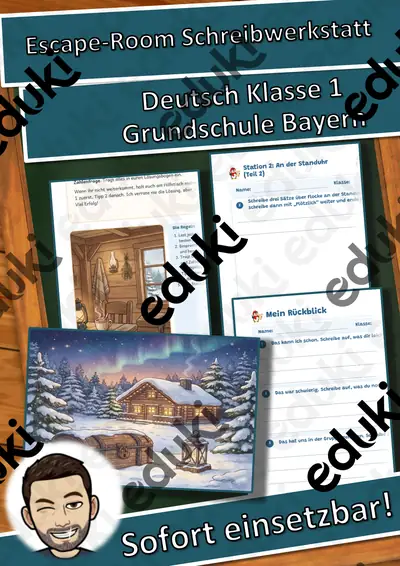
Escape-Room Schreibwerkstatt – Deutsch Klasse 1 Grundschule: 6 Stationen, 2 Schlösser

Escape-Room Sprechen und Zuhören – Deutsch Klasse 3 Grundschule: 6 Stationen, 2 Schlösser
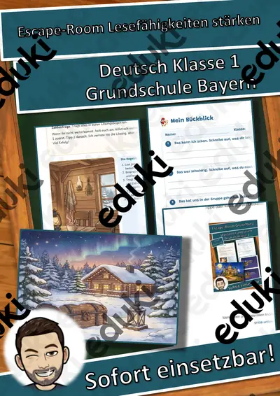
Escape-Room Lesefähigkeiten stärken – Deutsch Klasse 1 Grundschule: 6 Stationen, 2 Schlösser

Escape-Room Sprechen und Zuhören – Deutsch Klasse 1 Grundschule: 6 Stationen, 2 Schlösser

Knobel-Adventskalender: 24 Rätsel mit Lösungsbuchstaben und Geheimsatz, Klasse 2–3 (+4 Wdh.)
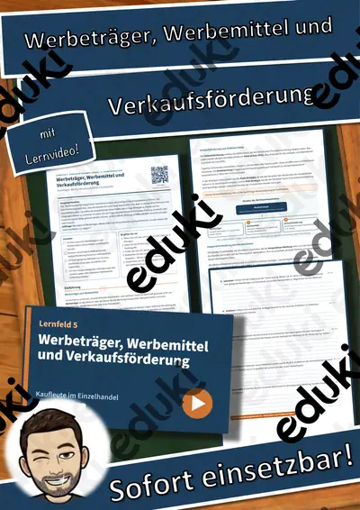
LF 5 Kaufleute im Einzelhandel: Werbeträger, Werbemittel und Verkaufsförderung – Übungen, Lösungen + Lernvideo

Gemeinschafts-Weihnachtsbaum: Klassen-Tannenbaum zum Ausmalen, 20–40 Teile mit Lageplan, Klasse 1–4
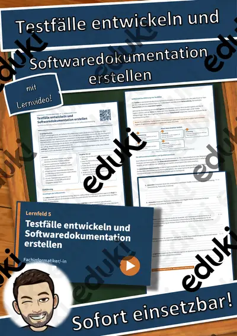
LF 5 Fachinformatiker/-in: Testfälle entwickeln und Softwaredokumentation erstellen – Übungen, Lösungen + Lernvideo

LF 13 Zahnmedizinische Fachangestellte: Qualitätsmanagement und Checklisten in der Praxis – Übungen, Lösungen + Lernvide
LF 5 Zahnmedizinische Fachangestellte: Wurzelkanalbehandlung: Ablauf, Instrumente und Assistenz – Übungen, Lösungen + Le
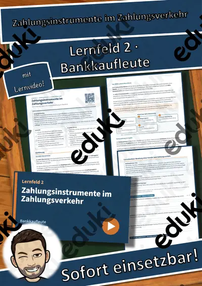
Lernfeld 2 Bankkaufleute: Zahlungsinstrumente im Zahlungsverkehr – Einführung, Übungen, Lösungen + Lernvideo
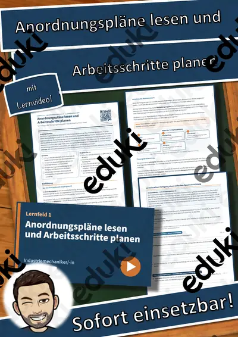
LF 1 Industriemechaniker/-in: Anordnungspläne lesen und Arbeitsschritte planen – Übungen, Lösungen + Lernvideo
Keine Materialien gefunden – versuch einen anderen Suchbegriff oder Filter.